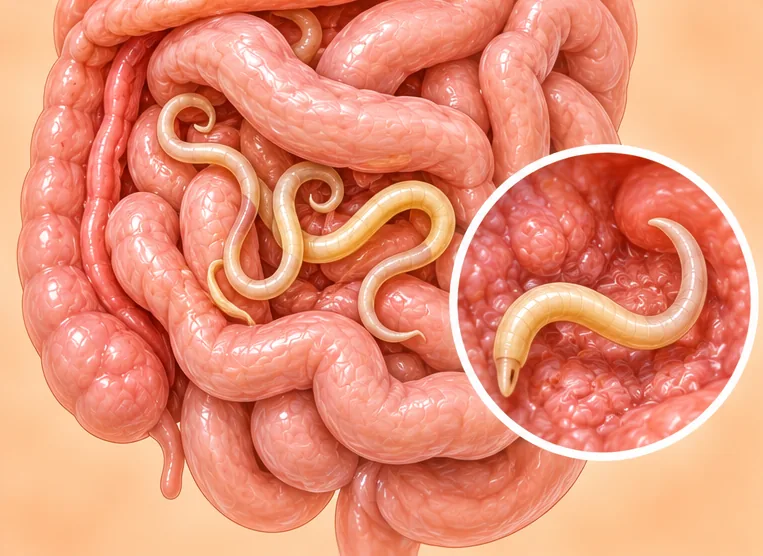
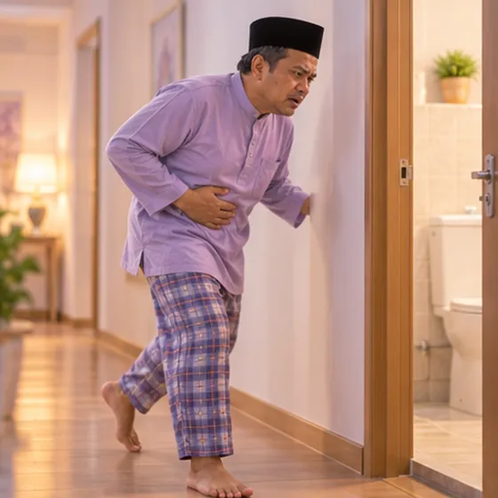

Roundworm infection (ascariasis)
A common infection with large intestinal worms, caught by swallowing eggs from soil, food or water
What it is
Large roundworms live in the small bowel after their eggs are swallowed. Many people feel nothing, but a heavy infection can cause belly pain, poor appetite and poor growth in children.
- Small bowel in the belly
- More common in children
- Belly ache, or no signs
- Which doctor
- Family doctor; children can see a paediatrician
- Common in
- Children, and people living where clean water and toilets are limited
- Contagious
- No, not directly; spread by soil, food or water that holds the eggs
- Course
- Often mild or silent, but a heavy infection can block the bowel
Common signs
Cramping belly painAbdominal cramps 
Feeling sick, nauseaNausea 
No appetiteLoss of appetite 
Loose, frequent stoolsDiarrhoea Dry, tickly coughDry cough
Why it happens
- Swallowing roundworm eggs from soil that has human waste in it
- Eating raw or unwashed vegetables and fruit grown in such soil
- Drinking unsafe water, or eating food touched by unwashed hands
- Children playing in soil, then putting fingers in the mouth
- Where toilets and sanitation are poor, eggs build up in the soil
See a doctor first if
- Severe belly pain with repeated vomiting or a hard, swollen belly: go to hospital now
- Yellow skin or eyes with strong pain in the upper belly: go to hospital now
- Choking, trouble breathing, or a worm coming out of the nose or mouth: go to hospital now
- A worm in the stool or vomit, or a cough with wheezing or fever: see a doctor today
- A child who is very thin, not growing well or has a swollen belly: see a doctor promptly
- Pregnant and worried about worms: ask your doctor before taking any medicine
If any apply, please see a doctor before a session.
This page is general information. Please keep taking your normal medicine and keep seeing your doctor.
Keep taking your normal medicine and keep seeing your doctor. Our session is a gentle support and does not replace medical care.
Looking after yourself
- Wash hands with soap and water after the toilet, before eating and before preparing food
- Wash vegetables and fruit well, and peel or cook them when you can
- Drink safe water, such as boiled or bottled water, and use a proper toilet
- Keep children's nails short and teach them to wash hands after playing in soil
- Ask your doctor or pharmacist about worm medicine; pregnant women need special advice
Tell your therapist
- Pregnancy
- Fever or an active infection
- A kidney or liver condition
Your therapist will go through this with you before starting.
Questions and answers
What is Roundworm infection (ascariasis)?
A common infection with large intestinal worms, caught by swallowing eggs from soil, food or water. Large roundworms live in the small bowel after their eggs are swallowed. Many people feel nothing, but a heavy infection can cause belly pain, poor appetite and poor growth in children.
What are the common signs of Roundworm infection (ascariasis)?
Cramping belly pain · Feeling sick, nausea · No appetite · Loose, frequent stools · Dry, tickly cough
Why does Roundworm infection (ascariasis) happen?
Swallowing roundworm eggs from soil that has human waste in it · Eating raw or unwashed vegetables and fruit grown in such soil · Drinking unsafe water, or eating food touched by unwashed hands · Children playing in soil, then putting fingers in the mouth · Where toilets and sanitation are poor, eggs build up in the soil
How can I look after myself with Roundworm infection (ascariasis)?
Wash hands with soap and water after the toilet, before eating and before preparing food · Wash vegetables and fruit well, and peel or cook them when you can · Drink safe water, such as boiled or bottled water, and use a proper toilet · Keep children's nails short and teach them to wash hands after playing in soil · Ask your doctor or pharmacist about worm medicine; pregnant women need special advice
Can an AI Body Master session help with Roundworm infection (ascariasis)?
A session is gentle, needle-free meridian support for your wellbeing. It does not treat or cure Roundworm infection (ascariasis) and never replaces your medicine or your doctor. Tell your therapist about it before the session starts.
Related conditions
References: General information based on public health sources such as Mayo Clinic, NHS, Cleveland Clinic and NCBI StatPearls.
Page updated: 2026-11-04